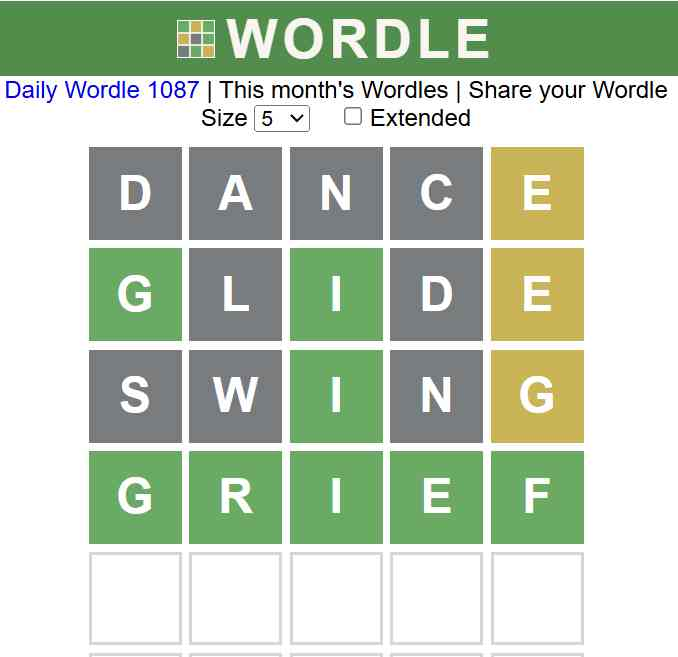

At the start of 2022, images of green and yellow squares began cropping up on Twitter, when
the pandemic spreading wide on earth with people quarantined at home. It a flash in the pan and
quickly gets off-booming in June which provides a good sample for Dataminer to find the regular
pattern for multitude and the sociology behind.
Wordle has established itself as a popular word puzzle game by 2022. After a year, the number of Wordle players progressively decreased, and the reported data appeared to be steady. Using the dataset provided by Twitter, we were able to derive a lot of information, such as forecasting the trend of the number of people who play the game in the future and obtaining results of difficulties related to various words in word puzzles. These results will be of great significance for the company to make strategies to popularize their game.
Regarding the issue at hand in this competition, we created various models for various queries to better suit the data while yielding results. Before focusing on the need, we cleaned the data, corrected a few of its flaws, and took a quick look at its characteristics. In problem 1(a), we applied ARIMA (4,1,2) model to predict the number of people who reported their results on March,1,2023, and tested it with random forest method. The number of reported results predicted by ARIMA is 19698. In order to further verify the reliability of our model, we applied our model to predict number in February,1,2023, results showed that the real data is also in our predicted interval, which was quite good. For problem 1(b), we use hypothesis testing, and found that there’s no high correlation between some basic attributes (word frequency, part-of-speech, sentiment).
In problem 2, we first created 5 factors that could affect outcomes in order to estimate the quantity of a specific term in the future: Text_rate, Green_score, Yellow_score, Combination_score, Entropy and employ regression using Random Forest Regression. Using the prediction model created in Problem 1, we replace the time parameters in this case with the number of persons. The predicted distribution percentage of "EERIE" is [ 0%, 3%, 17%, 37%, 32%, 10%, 0% ].
In order to categorize the phrases for issue 3, we utilize K-means clustering and split them into 4 classes: Simple, Ordinary, Rather Difficult and Difficult. We base our standards on the means and standard deviation of test results. The word "EERIE" is categorized as Rather Difficult using the Random Forest Classification.
We attempt to recover all users’ data for the final question rather than just those who contributed their answers. To do this, we create an algorithm that mimics human word guessing based on Wordle’s word statistics and English word frequency, and we uncover a wealth of intriguing data by taking into account players who tweet their game results.
Keywords: Wordle, ARIMA, Hypothesis-testing, Random Forest, Entropy, K-means
Wordle has established itself as a popular word puzzle game by 2022. After a year, the number of Wordle players progressively decreased, and the reported data appeared to be steady. Using the dataset provided by Twitter, we were able to derive a lot of information, such as forecasting the trend of the number of people who play the game in the future and obtaining results of difficulties related to various words in word puzzles. These results will be of great significance for the company to make strategies to popularize their game.
Regarding the issue at hand in this competition, we created various models for various queries to better suit the data while yielding results. Before focusing on the need, we cleaned the data, corrected a few of its flaws, and took a quick look at its characteristics. In problem 1(a), we applied ARIMA (4,1,2) model to predict the number of people who reported their results on March,1,2023, and tested it with random forest method. The number of reported results predicted by ARIMA is 19698. In order to further verify the reliability of our model, we applied our model to predict number in February,1,2023, results showed that the real data is also in our predicted interval, which was quite good. For problem 1(b), we use hypothesis testing, and found that there’s no high correlation between some basic attributes (word frequency, part-of-speech, sentiment).
In problem 2, we first created 5 factors that could affect outcomes in order to estimate the quantity of a specific term in the future: Text_rate, Green_score, Yellow_score, Combination_score, Entropy and employ regression using Random Forest Regression. Using the prediction model created in Problem 1, we replace the time parameters in this case with the number of persons. The predicted distribution percentage of "EERIE" is [ 0%, 3%, 17%, 37%, 32%, 10%, 0% ].
In order to categorize the phrases for issue 3, we utilize K-means clustering and split them into 4 classes: Simple, Ordinary, Rather Difficult and Difficult. We base our standards on the means and standard deviation of test results. The word "EERIE" is categorized as Rather Difficult using the Random Forest Classification.
We attempt to recover all users’ data for the final question rather than just those who contributed their answers. To do this, we create an algorithm that mimics human word guessing based on Wordle’s word statistics and English word frequency, and we uncover a wealth of intriguing data by taking into account players who tweet their game results.
Keywords: Wordle, ARIMA, Hypothesis-testing, Random Forest, Entropy, K-means